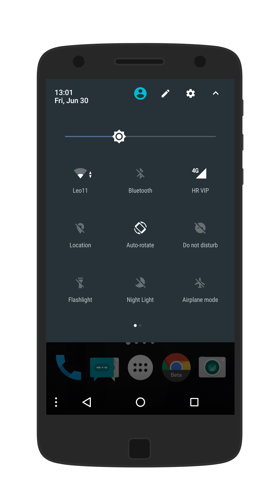
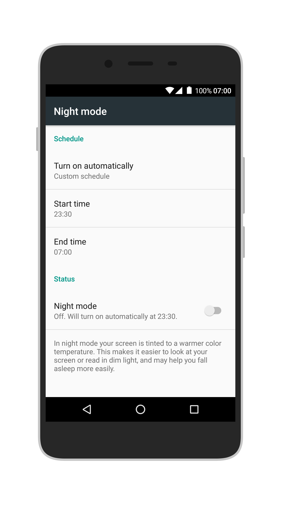

This Substratum module enables the Night Light feature, present on the Google Pixel devices, on other devices running Android 7.1.x. Works best on ROMs close to stock (meaning Sony, Motorola, Nexus, Essential PH-1 and stock-based custom ROMs).
To install, download the app from the link below and install it. The app is a Substratum theme engine module, meaning that working Substratum is a prerequisite. Once the app is installed open the Substratum manager, enable the "OTG Subs Theme" and restart your device.
Download link (2 MB .apk)